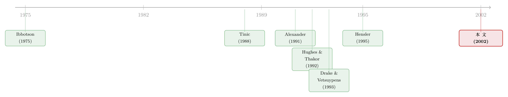

新股「打折」，到底是不是在给将来的官司买保险？
本文读的是 Lowry & Shu (2002, Journal of Financial Economics)：作者用一套 联立方程 (simultaneous equations) 把「诉讼风险」和「新股折价」的内生纠缠拆开，发现两件事同时成立——法律风险越高的公司，IPO 折价越狠（保险效应）；而折价越狠，被告的概率越低（威慑效应）。一个被 OLS「藏」了二十年的故事，终于露出真容。
1 一个让人不服气的「常识」
先说一个几乎所有金融学学生都背得出的事实：公司第一次公开发行股票（IPO）的当天，平均要涨大约 15%。也就是说，公司把股票以发行价卖出去，第二天市场就给它标了一个更高的价——这中间凭空「漏掉」的钱，就是著名的 新股折价 (IPO underpricing)。这个现象几十年不退潮，至今仍是金融学里最顽固的「反常」之一。
为什么发行人甘愿把钱留在桌上？教科书里给了三套说法：信号理论、信息不对称、以及——本文的主角——诉讼风险 (litigation risk) 假说。前两套被无数论文反复检验过；唯独第三套，雷声大、雨点小，证据「至多算是模棱两可」。
诉讼风险假说的直觉其实很顺：美国 1933 年《证券法》第 11 条 (Section 11) 规定，IPO 投资者如果发现招股书有重大不实或遗漏，可以起诉，而赔偿额是直接挂钩发行价的——发行价越低，潜在赔偿越小，原告也就越没动力来告你。于是「主动把发行价压低一点」，就成了一种特别的保险：别的保险是花钱买，而折价这种保险，是直接削掉了对方能拿走的那块蛋糕。（关于折价到底是不是「真折价」这个更根本的争论，可参见《新股到底是「打折」卖，还是「溢价」卖？》。）
听上去天衣无缝。可怀疑者（比如 Alexander, 1993）拍了桌子：你算算账啊——折价动辄是发行规模的 15%，而历史上 IPO 被告的概率才 6% 左右，平均和解金也就那么点，用 15% 的确定损失去对冲一个 6% 概率的小官司，这买卖怎么看都不划算。
这正是本文要正面硬刚的地方。
2 「back-of-the-envelope」的反驳，错在哪？
作者的回击分两层。
首先，那个「6% 概率太低、所以折价不值」的算法，犯了一个隐蔽的逻辑错误：官司频率和和解金之所以低，恰恰可能是因为大多数公司已经用折价买好了保险。你不能拿「买了保险之后的事故率」去证明「保险没用」——这是典型的因果倒置。
接着，一个自然的问题是：官司真有那么便宜吗？作者翻遍了 SEC 文件、法院档案、Gilardi 公司的集体诉讼数据库，把成本一项项摊开来看。结果是：Section 11 和解金平均 $3.1 百万，占募资额的 10.1%；如果把那些被驳回的「零和解」案子剔掉，平均和解金升到 $4.0 百万，占募资额的 13.3%；个别极端案例，和解金能吃掉募资额的 46%。而且——这才是关键——和解金只是冰山一角。一桩 Section 11 官司从立案到了结，平均要拖 27.6 个月。两年多里，管理层的精力被牵扯、律师费持续烧、公司声誉受损，这些「看不见的成本」常常比和解金本身更伤。样本里有公司（如 Meadowbrook、US Wireless）在年报里白纸黑字地写：之所以选择和解，就是为了「尽量减少对公司运营和管理层精力的扰动」。
这一招很「石川」：当别人用一个简单的期望值算式否定一个假说时，真正该做的不是反驳那个数字，而是去问——这个算式里，是不是有一整类成本被悄悄漏掉了？把漏掉的成本捡回来，结论就反转了。
所以，官司其实很贵，企业有强烈动机去「投保」。但这只解决了「动机够不够」的问题。真正难的问题在后面。
3 真正关键的一步：内生性这堵墙
诉讼风险假说其实暗含两条方向相反的因果链，这一点是全文的灵魂，值得慢慢说。
- 第一条（保险效应 / insurance effect）：法律风险越高的公司，越要多折价来投保。所以——折价是诉讼风险的增函数。
- 第二条（威慑效应 / deterrence effect）：折价越多的公司，买的保险越足，将来被告的概率越低。所以——被告概率是折价的减函数。
看出问题了吗？折价 (underpricing) 既是「被诉讼风险推高的结果」，又是「能压低诉讼概率的原因」。它同时站在因果链的两端。
于是，早期研究的做法——Drake & Vetsuypens (1993) 把 93 家被告公司和配对的未被告公司放在一起，直接比较两组的首日收益——就掉进了陷阱。他们发现被告公司和未被告公司的折价没什么差别，于是宣布：被告公司并没有「定价过高」，诉讼风险假说不成立。
但你只要把那两条相反的力放在一起想，就明白这个比较为什么会失灵：高风险公司本该多折价（第一条把折价往上推），可多折价又把它的被诉概率压了下去（第二条把它从「被告组」里拽了出来）。两股力在横截面上互相抵消，最后你在「被告 vs 未被告」的简单对比里，自然什么都看不见。本文样本里也复现了这个「空结果」：被告公司首日收益 13.22%，未被告公司 14.51%，统计上毫无差别。
这正是为什么作者反复强调：被诉概率本身就是一个内生变量，它依赖于折价。任何把「被告」当成外生分组的横截面比较，都注定问错了问题。
那怎么办？真正关键的一步在于——既然两个变量互为因果，就别再试图用单方程去「分离」它们，而要用一套联立方程把两条因果链一起估出来。
4 把模型写下来：Tinic 的期望诉讼成本
在动手估计之前，先看清楚这套逻辑的理论骨架。Tinic (1988) 把一家 IPO 公司的期望法律负债写成了一个简洁的式子。设 \(P_0\) 为发行价，\(P_t\) 为上市后 \(t=1,2,\dots,T\) 时刻的股价，\(L_t\) 为法律负债的美元成本，则：
这个式子的妙处在于，它把诉讼成本拆成了「概率」与「金额」两块，而两块都随发行价 \(P_0\) 上升而上升。把这层逻辑倒过来看就一目了然：
$$\frac{\partial \mathbb{E}[L_t]}{\partial P_0} > 0$$
也就是说，发行价定得越高，期望诉讼成本越大。于是公司有动机主动压低 \(P_0\)——这恰好就是折价。Hughes & Thakor (1992) 在博弈论框架下给出了「均衡折价」存在的条件，Hensler (1995) 又用单期效用最大化模型复现了同一结论。三套模型殊途同归，都预言：诉讼风险与折价正相关。
直觉其实很朴素：折价不像你去市场上买一份保单（那是平白多花一笔钱），它是同时降低了「事故概率 \(f\)」和「事故损失 \(g\)」的双重保险。这就是为什么作者说，折价是一种「特别有吸引力」的投保方式。
5 识别策略：让两个方程同时说话
理论说完，回到本文的真正贡献——计量设计。
作者写下两个联立的方程（用 Maddala (1983) 的限值因变量方法估计）：
方程一（折价方程）：把首日收益 (initial return) 对一组诉讼风险代理变量回归，外加常规的折价控制变量（承销商声誉、发行规模、风投背景等，这些控制本身来自庞大的折价文献）。这一支识别的是保险效应——风险高，是不是真的折价更多？
方程二（诉讼方程）：把「是否被 Section 11 起诉」这个 0/1 变量，对首日收益及风险变量回归。这一支识别的是威慑效应——折价多，是不是真的被告更少？
两个方程里，首日收益是共同的内生变量，一边是被解释变量、一边是解释变量。只有把它们放进同一套系统联立求解，才能把那两股「互相抵消」的力拆开。
然后，于是反转出现了：
- 在单方程 OLS 里，折价对诉讼风险的系数是反的（负的）——这正是 Drake & Vetsuypens 当年看到的「假象」，也是二十年来诉讼风险假说屡屡碰壁的根源。
- 一旦改用联立方程控制了内生性，符号翻正了：法律风险更高的公司，折价显著更多，保险效应成立；同时，折价更多的公司，被诉概率显著更低，威慑效应也成立。
一正一反，两个效应第一次被干净地分开，双双站住。作者由此说：这恰恰证明了「控制内生性」在这个问题里有多致命——同一批数据，换一种识别，结论从「不成立」变成「成立」。
把这件事说透一点：这篇论文真正卖的不是「诉讼风险假说对了」，而是「为什么过去的人会以为它错了」。答案是一个被忽视的联立性。这是典型的「方法纠正实证」的范式——和《财报里灌进去的水，最后变成了一张传票》关心的是同一片诉讼土壤，但切入的角度正好互补。
6 数据：把官司一桩桩翻出来
证据的可信度，最后还是要落到数据的扎实程度上。
样本是 SDC 数据库里 1988–1995 年的 IPO，剔除封闭式基金、单位发行、REITs、金融公司、反向 LBO、ADR 和分拆，并要求有首日收益数据，最终得到 1,841 家 IPO。被诉案件则是手工从 Securities Class Action Alert 通讯、Securities Class Action Clearinghouse 网站、公司 10-K/10-Q、法院档案 (Pacer)、Gilardi 公司网站一路扒出来的。
- 全样本中
106家（5.8%）被诉；其中能确认 Section 11 起诉的有84家，构成主样本。 - Section 11 官司「来得快」：
84桩里56桩在 IPO 后一年内就立案，中位数251天；而非 Section 11 官司中位数是502天。这与「Section 11 赔偿挂钩发行价、股价一跌就告」的逻辑高度一致。 - 描述统计里，被告公司在募资额和市值上显著更大——这就是法律文献里著名的「深口袋 (deep pocket)」理论：原告打官司有固定成本，只有预期能从大公司身上捞到足够赔偿，才值得起诉。这也提醒我们，公司规模必须作为控制变量进入方程。
一个有意思的旁证来自 Keloharju (1993)：芬兰几乎没有 IPO 诉讼风险，可那里的新股平均首日收益仍有 8.7%。这说明诉讼风险解释不了全部折价——但美国的折价显著高于芬兰，那块「超出的部分」，很可能就是法律风险的价钱。
7 文献脉络
把这条研究线捋一捋，会看到一个很「金融学」的演化路径：先有一个直觉假说，再有一个理论模型，然后实证一次次失败，最后由一个方法上的修正把它救活。
最早是 Ibbotson (1975) 在研究新股价格表现时，顺手提出「折价或许是一种对未来法律责任的保险」。十几年后，Tinic (1988) 把这个直觉正式写成了期望诉讼成本的模型 \(\mathbb{E}[L_t]=f(\cdot)g(\cdot)\)，并用 1933 年《证券法》前后的对比做了第一次检验：法案大幅提高了 IPO 的法律风险，而法案之后的折价确实更高。Hughes & Thakor (1992) 用博弈论给出均衡折价的条件，Hensler (1995) 用效用最大化模型再次复现，理论这一支日趋完整。

但实证这一支却屡屡碰壁。Drake & Vetsuypens (1993) 指出 Tinic 的跨期比较没控制折价本身的时间波动，改用横截面比较被告 vs 未被告公司，结果发现两组折价无异，宣布假说「不成立」。与此同时，Alexander (1991, 1993) 从「诉讼成本太低、和解更看资产而非案情」的角度，给假说泼了更多冷水。
本文 Lowry & Shu (2002) 站的位置，正是在 Drake & Vetsuypens 的「失败」之上：他们没有否定数据，而是指出那个横截面比较因为内生性而无效，并用联立方程把保险效应与威慑效应一次性拆开估出来。一个被搁置近三十年的假说，由此重新站稳。
8 评论与延伸（Q&A + 研究方向）
(a) 几个可能的疑问
Q：联立方程是不是只是「换了个模型就换了个结论」，有没有过拟合之嫌？
这是最该警惕的地方。作者的辩护是逻辑性的：被诉概率在理论上必然依赖折价（威慑效应），所以单方程把折价当外生本来就是误设；联立方程不是「调参调出来的」，而是把模型设定对齐到理论结构上。但代价是，联立系统的识别要靠排他性约束（某些变量只进一个方程），这些约束是否可信，论文截断处没完全展开，是读者该追问的命门。
Q：被诉概率才 5.8%，威慑效应的统计功效够吗？
84 个 Section 11 事件确实不算多，离散因变量 + 小事件数会让标准误偏大。作者自己也提到，州法院案件未被 Securities Class Action Alert 收录，可能把部分被告公司误判为「未被告」——但这种误分类是偏向于削弱他们的预测结果的，所以若结论仍显著，反而更可信。
Q：折价真的是公司「主动选择」的吗？会不会只是定价误差？
这是诉讼风险假说与「部分调整 (partial adjustment)」等信息类解释的根本分歧。本文的逻辑前提是发行人/承销商有意压价投保；但承销商的薪酬、配售权等也会影响定价，折价未必全是公司的「主动投保」。把折价的「主动 vs 被动」成分分开，本文并未完全做到。
Q：深口袋效应会不会污染识别？大公司既募资多、又更容易被告。
作者把规模（募资额、市值，并以 1983 年美元平减）作为控制变量正面处理。但规模和折价、和被诉概率都相关，是个典型的混淆因子；控制是否充分，取决于函数形式是否设对，这一点永远留有余地。
Q：这套结论能外推到 Section 11 之外吗？
严格说不能。全文的因果机制依赖「赔偿直接挂钩发行价」这一 Section 11 特性；Section 12、10(b) 的赔偿挂钩的是投资者买入价而非发行价，折价的威慑逻辑就不成立。所以这是一个制度细节驱动的结果，换个法条、换个国家（比如芬兰）就未必复现。
Q：既然折价这么贵，为什么不直接买董责险 (D&O insurance)？
好问题。折价相对其他保险的独特之处在于，它同时压低了被诉概率 \(f\) 和单笔赔偿 \(g\)，而保单只赔钱、并不降低被告概率，也不削减原告的索赔动机。不过这也意味着，若把 D&O 保额纳入分析，保险效应的估计可能被高估——这是本文没控制的一个维度。
(b) 几个可能的研究问题与提案
1. 把「诉讼风险折价」搬到公司债 / 信用市场
【经济故事】债券发行同样面临证券诉讼（尤其高收益债的招股说明书责任）。发行人会不会也用「发行折价」来给将来的诉讼投保？信用利差里是否藏着一块「法律风险溢价」？ 【可行性】中。TRACE + Mergent FISD 可识别新债发行与二级市场首日定价，诉讼数据可沿用本文的手工框架。难点在于债券诉讼远少于股票，事件数可能不足，且联立识别要找债市特有的排他性工具。
2. 外资持有人与诉讼风险的交互
【经济故事】外国投资者参与度越高的 IPO，集体诉讼的协调成本、法律可达性都不同；外资是否改变了「折价投保」的边际收益？ 【可行性】中低。需要把 13F / 招股书配售信息和被诉数据匹配，外资身份的清晰识别是主要障碍；识别上可借助某些放开外资准入的制度变化做准实验。
3. PSLRA（1995 私人证券诉讼改革法）作为外生冲击
【经济故事】1995 年改革大幅提高了证券集体诉讼的门槛，等于外生地降低了 IPO 的诉讼风险。诉讼风险假说预言：法案之后折价应当下降。这正好能绕开本文的内生性，用一个准自然实验直接检验保险效应。 【可行性】高。本文样本恰好跨越 1995 年，DiD / 断点设计天然适配，数据现成。这几乎是本文逻辑的一个「免费」延伸，且能回应「联立方程是否可信」的质疑。
4. 把「看不见的诉讼成本」量出来
【经济故事】本文反复强调声誉成本、管理层精力等隐性成本，却只能定性描述。能否用 CEO 离职率、后续融资难度、分析师覆盖变化等，把这些隐性成本「显影」出来？ 【可行性】中。需要事件研究 + 长窗口跟踪，因果识别偏弱（被诉本身内生），但作为机制证据有价值。
9 我的判断
这是一篇「方法救活假说」的范本。它最漂亮的地方不在数据，而在那一句洞察——被诉概率本身是折价的函数，所以任何把被告当外生分组的比较都注定失灵。一旦把这层联立性摆上台面，OLS 的负号翻成正号，二十年的「空结果」豁然开朗。这种「不是数据错了，是问法错了」的纠偏，往往比新发现一个相关性更有分量。
但要诚实地说，担忧也在识别上。联立系统的可信度，全压在那些没被完全展示的排他性约束上；84 个 Section 11 事件支撑的威慑效应，统计功效偏薄；而折价中「主动投保」与「定价误差」两种成分始终没被干净分开。换句话说，本文有力地证明了「控制内生性会让结论反转」，却未能证明「反转后的因果方向唯一」。
如果让我接着往下看，我最想要的是 PSLRA 这类外生制度冲击做的 DiD——用一个不依赖联立假设的实验，去复核保险效应的符号。如果在那里折价依然随法律风险同向变动，这个假说才算真正落地。在那之前，本文是一个极有说服力、但仍需外生证据加固的「翻案」。
参考文献
- Alexander, J. (1991). Do the merits matter? A study of settlements in securities class actions. Stanford Law Review 43, 497–588.
- Alexander, J. (1993). The lawsuit avoidance theory of why Initial Public Offerings are underpriced. UCLA Law Review 41, 17–73.
- Drake, P., Vetsuypens, M. (1993). IPO underpricing and insurance against legal liability. Financial Management 22, 64–73.
- Hensler, D. (1995). Litigation costs and the underpricing of initial public offerings. Managerial and Decision Economics 16, 111–128.
- Hughes, P., Thakor, A. (1992). Litigation risk, intermediation, and the underpricing of initial public offerings. Review of Financial Studies 5, 709–742.
- Ibbotson, R. (1975). Price performance of common stock new issues. Journal of Financial Economics 2, 235–272.
- Keloharju, M. (1993). The winner's curse, legal liability, and the long-run price performance of initial public offerings in Finland. Journal of Financial Economics 34, 251–277.
- Lowry, M., Shu, S. (2002). Litigation risk and IPO underpricing. Journal of Financial Economics 65(3), 309–335.
- Maddala, G. (1983). Limited-Dependent and Qualitative Variables in Econometrics. Cambridge University Press.
- Tinic, S. (1988). Anatomy of initial public offerings of common stock. Journal of Finance 43, 789–822.